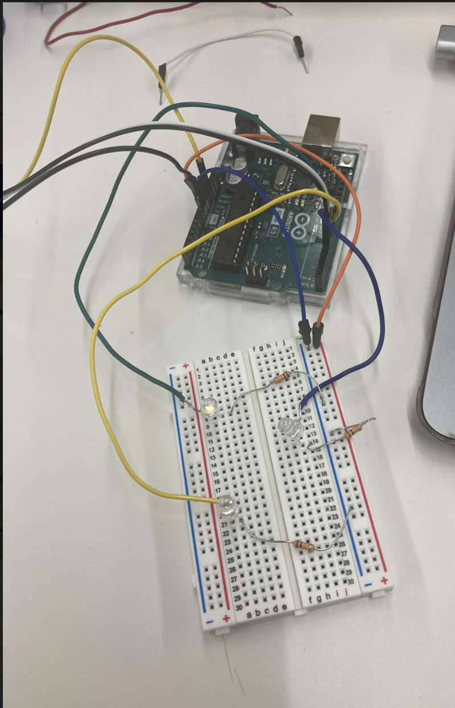
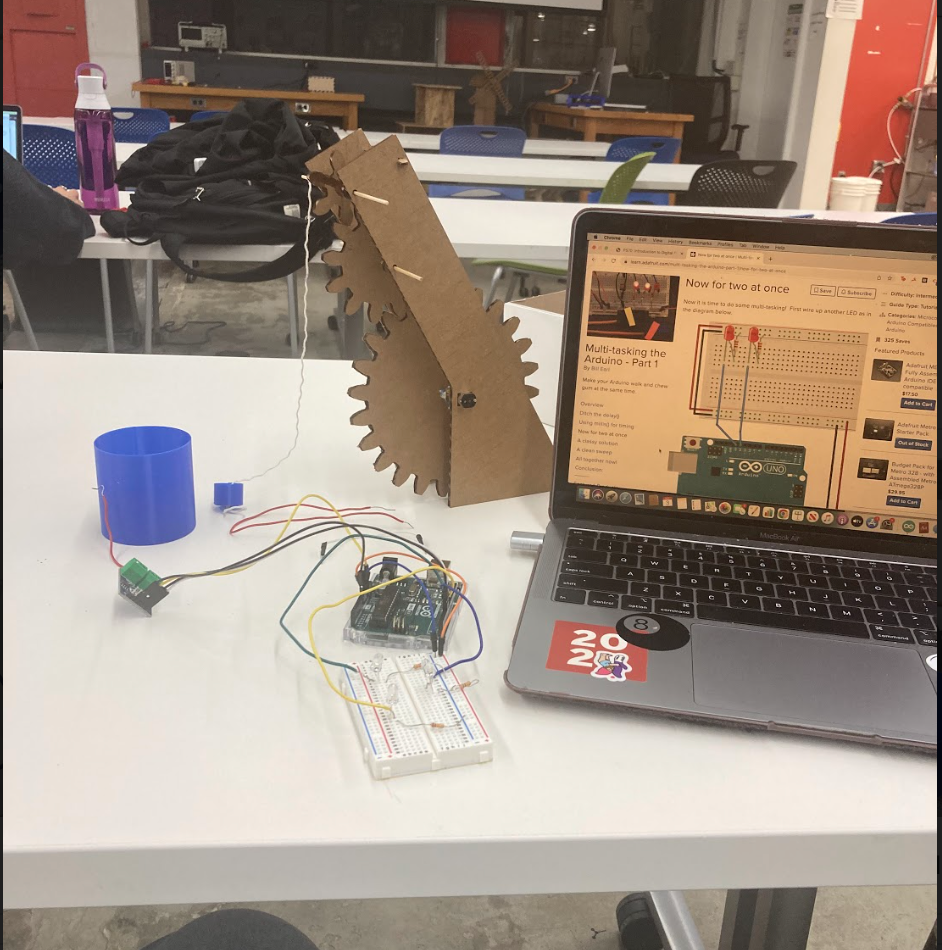
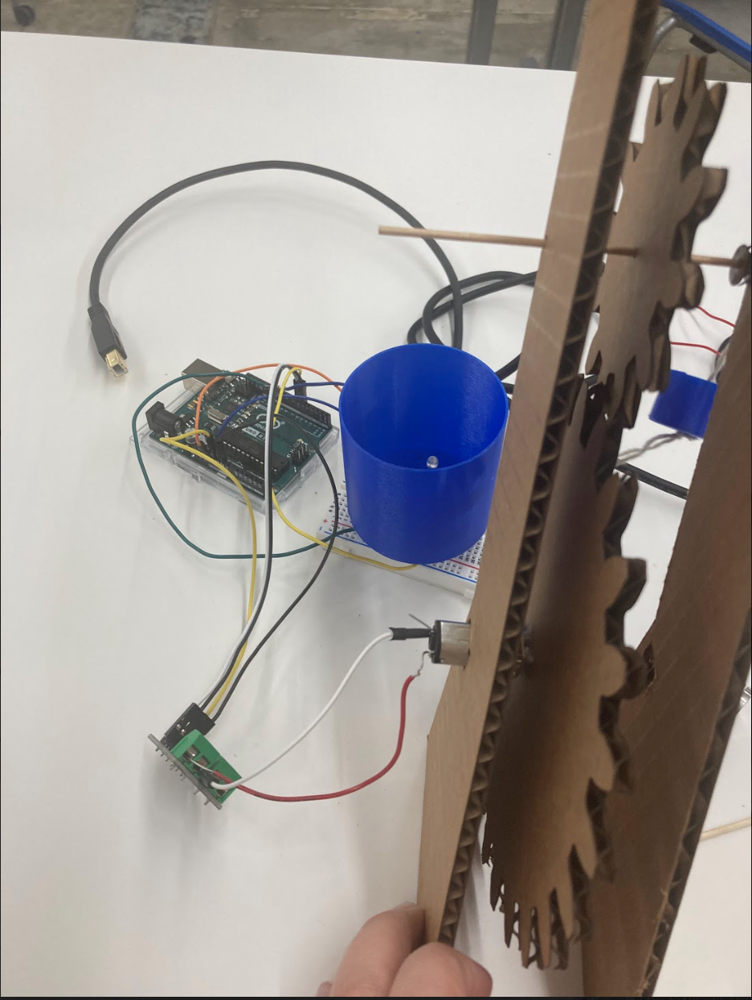
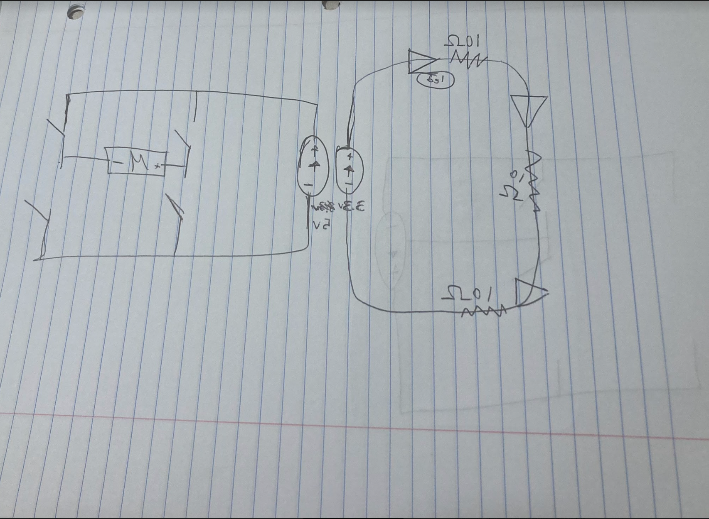

<br>
#### Week 5: Microcontroller Programming
This week I adapted my well kinetic sculputure to be able to wind the bucket up and down. I also 3D printed a bucket and well basin for the project. The basin had space for the LED lights that flashed as the gear wound the string, to mimic rippling water.
To 3D print the basin and bucket, I made the basin a 60mm diameter cylinder with a 1mm thick base and 2 mm thick walls. There is also a circular pattern of 4mm circles cut out of the bottom of the basin for the LEDs. The walls were extruded 60mm.
For the bucket, I made a 1mm in diameter hole in the bottom of a 20mm diameter circle. The base of the circle was 1mm thick and the walls were 2mm thick and extreded 10mm.
<a download href='./well3Dprintsv1.stl.stl'>Download my STL file </a>
<a download href='./_well 3D prints.152b1785-663c-4be8-bdcb-cdfd87ff8bf2.f3d'>Download my Fusion Design </a>
<a download href='./Well3DPRINTS.gcode'>Download my gcode </a>
They printed great!
Now I needed to do the code, I adapted the motor code in class to use millis instead of delay to switch directions.
This was the original code from the website:
<pre><code class="language-arduino">
const int A1A = 3; // define pin 3 for A-1A (PWM Speed)
const int A1B = 4; // define pin 4 for A-1B (direction)
void setup() {
pinMode(A1A, OUTPUT); // specify these pins as outputs
pinMode(A1B, OUTPUT);
}
void loop() {
motorA(LOW, 255); // turn motor CW at full speed
delay(2000); // delay for 2 seconds
motorA(HIGH, 63); // turn motor CCW at quarter speed
delay(4000); // delay for 4 seconds
}
// This is a custom function to drive Motor A
// inputs: direction (HIGH/LOW), speed (0-255)
// outputs: motor control
void motorA(byte d, int s) {
if(d == 1){
analogWrite(A1A, 255-s);
digitalWrite(A1B, HIGH);
} else if (d == 0){
analogWrite(A1A, s);
digitalWrite(A1B, LOW);
}
}
</code></pre>
I used pins 5 and 6 on the board, so I changed that. Then I added the variables
<pre><code class="language-arduino">
unsigned long previousMillis1 = 0;
long OnTime1 = 2000;
int Direction = HIGH;
</code></pre>
Before the setup section, and I put the function definition, which comes at the end on the website, at the beginning before the <pre><code class="language-arduino">
void setup() </code></pre> section
In the setup section I added the variable "Direction"
<pre><code class="language-arduino">
motorA(Direction, 255);
</code></pre>
Then I looped to define currentMillis1 and switch motor direction then redefine what currentMillis1 was based on previousMillis1
<pre><code class="language-arduino">
void loop() {
unsigned long currentMillis1 = millis();
if(currentMillis1 - previousMillis1 >= OnTime1)
{
if (Direction == HIGH)
{
Direction = LOW;
}
else
{
Direction = HIGH;
}
motorA(Direction, 255);
previousMillis1 = currentMillis1;
}
</code></pre>
The code worked! Depending on the variable set for OnTime1 the motor would run in one direction then the other! All while flashing the LEDs.
To flash the LEDs, I used the code we went over in class and section. Essentially, I created a class for the Flasher and defined that class by an if and else if statement that would change the state of the lights depending on their OnTime and OffTime. The OffTime, OnTime, and Pin were set for each led, and they update themselves on a loop.
Download the total code here:
<a href='./Well_Code.ino' download > Download my full code! <\a>
The circuits were constructed according to the motor-driving link](https://nathanmelenbrink.github.io/ps70/04_arduino/index.html) on the website and on the [adafruit page.](https://learn.adafruit.com/multi-tasking-the-arduino-part-1/now-for-two-at-once)



My Fatal Flaw:
Everything ran electronically sucessfully. However, my mechanics could use some work. I tied string in a know at the bottom of the bucket and it worked well. I tried to laser cut some brackets and glue them onto the sides of the axles and glue the gears to the axle, so they would stop sliding around. They stopped sliding around too much. I accidentally glued the brackets to the sides of the machine. In trying to break it off, the top of the axle broke. The gears which were already not so well-aligned could not connect long enough to bring the bucket all the way up and down again. However, the electronics did function! The code did function! And if I were to continue this project, I may think about a better material to use than cardboard and a better way to design the gears/axles. I will try to build a similar machine in the future and finally get it right!
[Video of sculpture:]([this is how my machine worked:](https://drive.google.com/file/d/1QfJRfiEqj15n7mz1bHgvlSZMmLUhwdA9/view?usp=sharing))
Here is a drawing of the circuit:
